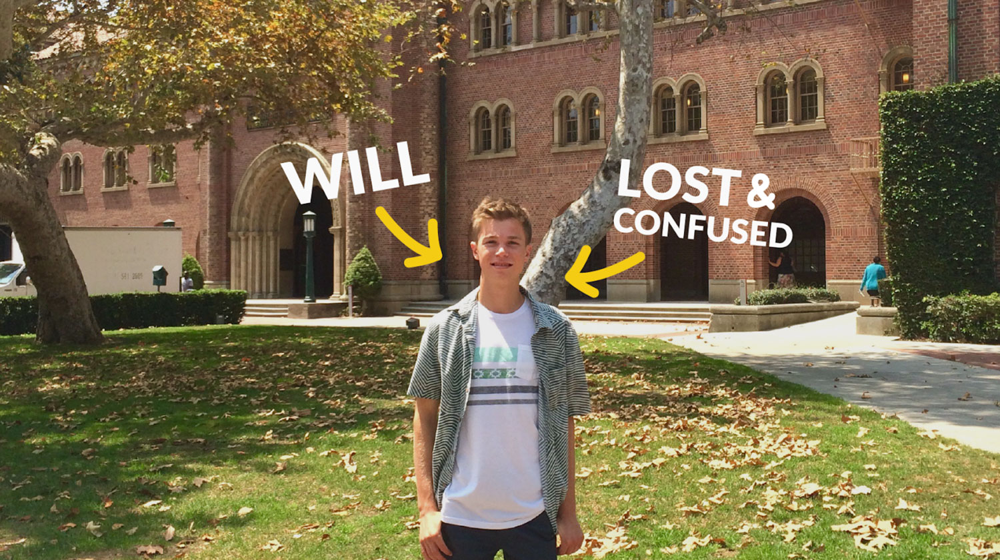
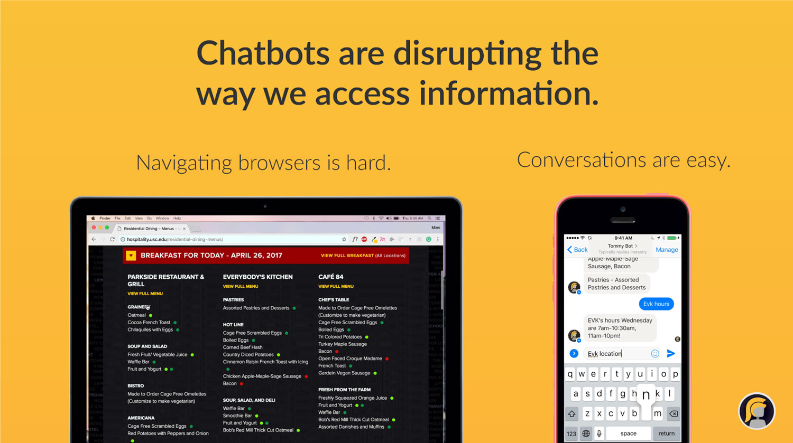
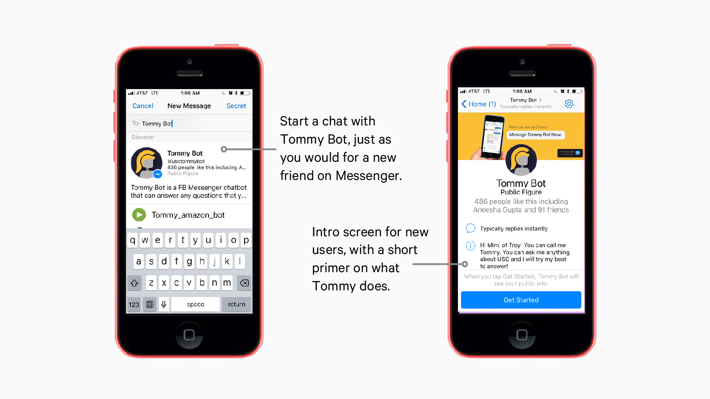
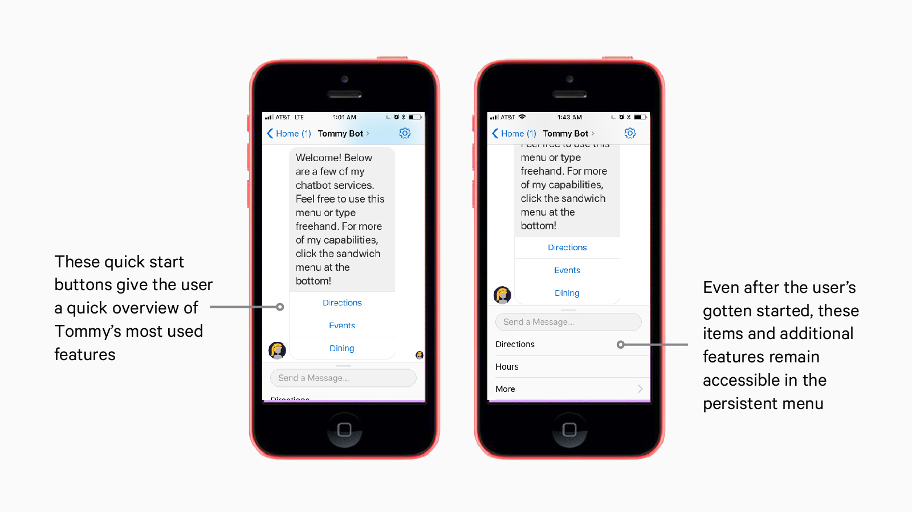
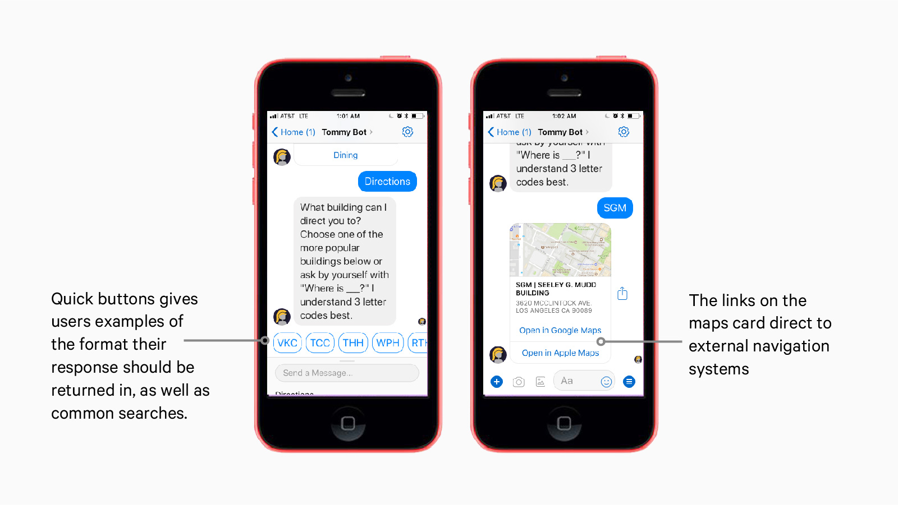
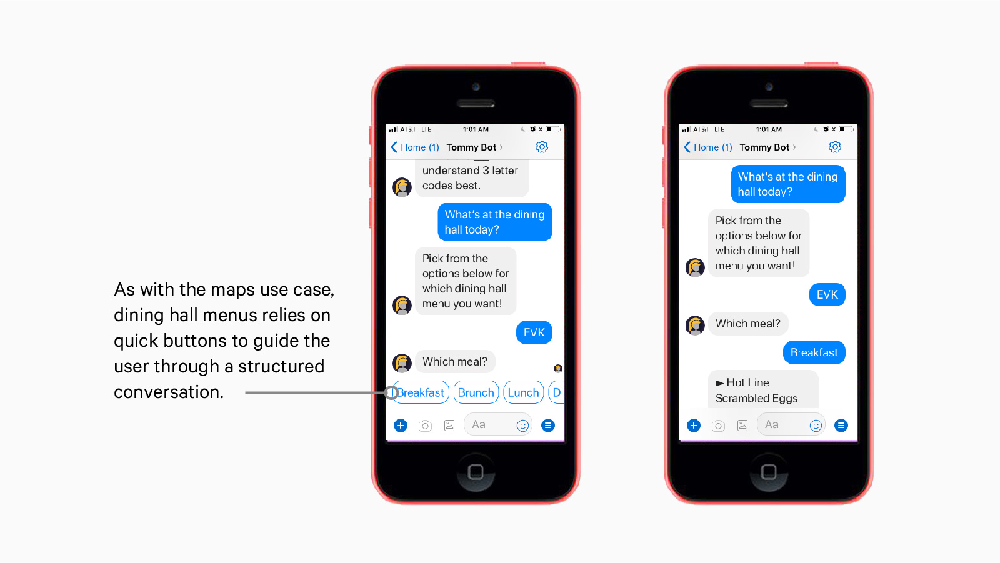
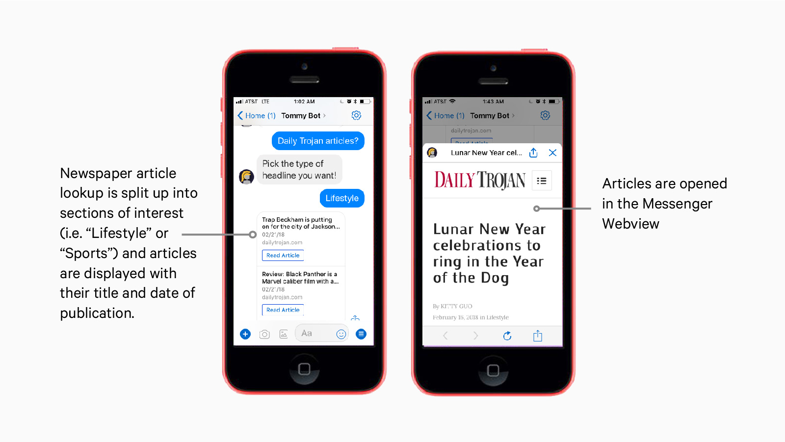
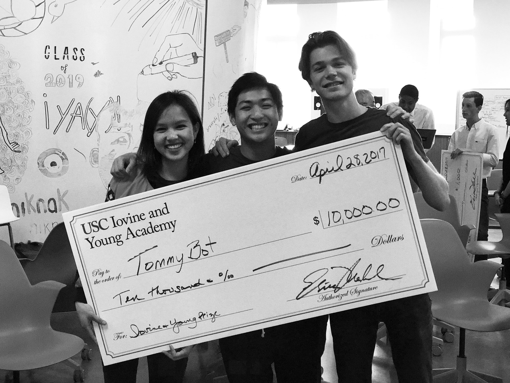

Overview
My team (Will Durkee, Sam Breck, Justin He) and I started Tommy Bot in Fall 2016 in Lavalab, USC's startup incubator. We were inspired to start this project because as freshmen, Justin and I were lost all the time, and we initially wanted to create something that helped us get around.
The Goal & Scope
We wanted to have the experience of taking a project from start to finish, or in other words, from idea to end user. Whatever problem we chose to tackle, it had to be small enough in scope that we’d be able to execute a product and run several iterations of it over the course of just one semester. At the time, we were a team of sophomores and freshman. It made the most sense to tackle a problem that we felt as students, and to create a product whose user profile matched ours and a user base that we could directly access. Those two factors helped us eventually create Tommy Bot.
First, a short story

That’s a picture of Will from move in day as a freshman. (It's unclear if that squinty smile was because he was lost and confused or because his mom was forcing him to take the photo.)
On the second day of that first semester, he was clueless to where any of his classes were, specifically his next class in the "SAL" building. So as he started walking to class he opened up the USC maps website on his phone, pinching and zooming around to try to find the building. After a few minutes of struggling to locate the building on the map while clumsily avoiding people on the sidewalk, he gave up. Luckily, he was able to get directions from a stranger.
Later in the day, he had 15 minutes before his next class and wanted to grab a quick bite to eat so he opened another tab on his phone to find a list of the dining halls, then navigated back to the maps website which he was struggling with before to find which dining hall was closest to him.
Now I don't know if you guys feel lost out there reading this, but it's pretty clear that Will's freshman self definitely was.
The Problem

Conversations with other students (several of our friends and strangers) at USC confirmed that finding information about USC’s campus is unnecessarily slow and irritating:
The information that students need is widespread over many different domains
This information is hard to access, especially when you’re on your way to class on your phone
Finally, the information these web pages return to you is often not specific to the situation that you’re in, for example, you have to swipe around and navigate the maps website on your own instead of getting returned a route from your current location to your desired destination
How might we make accessing information about campus faster, simpler, and more personal?
Research
Survey & Insights
As highlighted on our slide, we were able to glean the following insights from a survey of over 200 at USC students:
93% of students found that they would use a central hub of information about campus if available
94% of students surveyed use Facebook Messenger
The key takeaway was that everyone looks up information about campus, not just freshman
The Solution

From our surveys and insights, it seemed like the most straightforward solution to our problem statement was a centralized hub for publically available information about USC.
We weren't convinced that the best medium to create our product through was an app. Downloading apps is invasive — from our personal experience and various articles, it seemed like people rarely download and consistently use new apps anymore.
Thinking back to Will's second day as a freshman when he couldn't find the information he needed on his phone, his natural reaction was to start a conversation to ask someone for directions. This natural, conversational way we find information along with Facebook’s growing platform for bots convinced us that building a chatbot was the best way to help students get the info they need.
Constraints
Creating a bot that lives on the Facebook Messenger platform creates specific constraints. Messenger is a great platform through which students can interface with the hub of USC information because it provides a structured yet natural environment to interact with the bulk of information that would otherwise be difficult to navigate. That structure is provided by Facebook's best practices, which informed a significant portion of the design process.
Interaction Design
Initially we created Tommy Bot to be an open ended messaging interaction despite our very specific use cases (dining hall menus and building hours). When we ran early tests, we found that messaging a chatbot without guidance or constraints led to very unproductive conversations — the bot can't identify most of the user's intents if they haven't been defined, and the user has no idea what the bot is actually capable of doing.
To help onboard users and dictate possible interactions, we implemented buttons, quick replies, and the persistent menu. As highlighted in the Facebook guidelines, we needed to embrace structure and be predictable for the best user experience.
Beyond onboarding and general style of interaction, each use case required different design considerations. For example, some questions I tackled were:
What level of granularity should Tommy guide the user through? In other words, how many times would Tommy have to go back and forth with a user in a structured way to guide them to a fully defined intent, i.e. "What is being served for -breakfast- at -EVK-"? (For dining menus, there were two expected exchanges: one for the meal type and the other for the dining hall. For building directions, merely messaging Tommy the building code would suffice)
Should we limit Tommy to only answer properly defined intents? (No, users love to make conversation with the fun side of Tommy's bot capabilities. Structure in conversations with desired outcomes is good, otherwise, let Tommy's Natural Language Processing API do the heavy lifting for managing smalltalk)
What's the best way to present a user with a response? (Depends on the use case! For menus, plain text will do. For news articles or maps, rely on more GUI heavy elements instead of just conversation.)
Visual Design
While most of the visual design was dictated by the look of Facebook Messenger, I had quite a bit of leeway in creating a brand identity for our product and marketing materials.
The main challenge in creating a brand for Tommy Bot was to find a way to keep a neutral. I wanted to create a brand for Tommy Bot was neutral and relatable while simultaneously allowing room for students to engage with the brand as a mascot and get excited. The initial version we used in our beta kept USC’s yellow but tried to deviate from the campus’ identity with the grey (first image). The current redesign (second image), which launched in the fall, makes use of subtle gradients for added depth and rounded corners for a more cohesive look.
Flow & Sample Use Cases
Starting a chat with Tommy

Quick Start & Persistent Menu

Use Case: Directions

Use Case: Dining Hall Menus

Use Case: Student Newspaper Articles

Overall outcome

Find Tommy on Facebook Messenger
When you have a question for Tommy, there’s no extra app to download, you can just find him on Facebook Messenger and start a conversation with him.
Ask a question
Once you do that, ask him a question like “what time does evk close” (For context, "evk" is shorthand for the EVK Dining Hall)
Get an answer, instantly.
Tommy Bot currently knows about building locations, building hours, dining hall menus, DPS safety information, Daily Trojan Articles, campus events, and more. We’re constantly expanding and are constantly looking for feedback for improvement or new features.
Testing
After launching Tommy bot on January 9th, the beginning of the spring semester, we’ve collected a lot of data about our first version of Tommy Bot. After about 46,500 total interactions (stats from May 2017), or messages exchanged between users and Tommy Bot, we’ve learned that Tommy Bot’s retention rate is 28.2% over 90 days, while the average chatbot retention rate is 9.6%, according to Dashbot analytics.
In other words, our bot has managed to bring in and keep users because of our unique use cases:
We found dining halls to be a great use case, and students keep coming back to it. Users literally have to type in two short words, such as “evk lunch”, to receive exactly what they’re searching for. Users are probably already on Messenger talking to their friend about going to the dininghalls, and switching conversations is very easy. This is much more efficent than opening up tabs upon tabs on your phone to find what you’re looking for.
Other unique use cases that keep users messaging includes information about events on campus, fresh daily trojan articles, and building hours.
We'll keep asking students about their paint points to develop more use cases for Tommy Bot
Marketing Assets
Flyers
Flyers were used to reach potential users over Facebook, talking to students, and flyering around campus.
Videos
You can also find some of our videos on Facebook. Our first beta launch video is here , our updates video here, and our Fall 2017 launch video here. I used a mix of After Effects, Final Cut, and Illustrator to bring together the graphics & content.
Iovine and Young Prize
Pitch Deck
Most recently, I put together a pitch deck that helped the team win the 2017 Iovine and Young Prize, securing $10,000 to continue work on our project. The prize is awarded yearly “for exceptional creativity and feasibility.” Parts of the deck (still images, no GIFs) were used in this page to illustrate the process of designing and building Tommy.
Future
Our Vision
We’re looking to expand our campus chatbot model to different colleges across the US, and to turn Tommy Bot (or Bruin Bot, Tree Bot, etc.) into every student’s first and most reliable friend on campus. It’s so overwhelming to come to a new school and not know where anything is or what’s happening, and chatbots are a great way to access that information in a personal way.
Design Takeaways
Conversations need structure, even with bots
We didn't initially realize that handing a user a bot that you could "ask anything" is not productive. Eventually, we learned that most conversations with bots have desired outcomes, and it's our responsibility to best understand the user's intent and guide her to said outcome.
Understand the platform you're designing for
While Facebook Messenger's intuitive platform and wide userbase were positive features to launch our first product on, I was also challenged to understand user's expectations to design an experience that could live in the context of a Facebook Messenger conversation.
Be thorough in identifying users and use cases
While we definitely covered the surface level use cases for new students using Tommy Bot (dining hall menus, building hours), there are a number of potential areas for product development that we did not think of initially with users who are upperclassmen or professors.
Personal Takeaways
Sandbox projects are great places to pick up new skills
Tommy Bot was the first time my design skills were put to the test. Having just taken my first Illustrator class a week before our initial meeting as a team, taking on brand identity, product design, and marketing for one project was daunting. It's safe to say that my design know-how has grown in tandem with Tommy. Because we were working on a small team, I was able to supplement the three developers skills by taking on a design, marketing, and administrative role to make sure goals were met.
Entrepreneurship is important
Entrepreneurship, in our case, gave us agency to quickly solve problems we saw, especially in slow moving, established spaces. Tommy Bot was such a quick fix to the friction we felt in our daily lives, and if we had waited for USC to roll out a comprehensive app or website that did the same, we would probably already be seniors (no shade to USC, it’s obviously much more difficult to create and approve products in such a large organization).
Entrepreneurship is a great way to make an impact, to take initiative within your community and tackle a problem you care about or to bring one of your cool new ideas to life — it’s about making things happen without having to play by the rules (at least at first).
The Team is the most important component to any project
It's been a great learning experience to work on Tommy Bot this past year with this team. We all have varied interests and different backgrounds but mesh really well — all of our meetings are a blast. I can't wait to see where we all go, and I can confidently say that I wouldn't have done this with anyone else. From left to right, Sam Breck, (me), Justin He, and Will Durkee.
Press
Got a question? Ask Tommy Bot
The Daily Trojan
by Terry Nguyen
It is a confidently stated slogan from USC’s first ever chatbot, followed by a sly wink emoticon comprised of a semicolon and a parenthetical. “Tommy knows best,” the slogan says.

Campus chatbot reveals latest updates
The Daily Trojan
Baylee Schlichtman & Terry Nguyen
As the fall semester kicks off, Tommy Bot, the University’s first campus chatbot, is updated and ready for use by the USC community.

Beyond LavaLab: Tommy Bot
Lavalab
Beyond LavaLab takes a look at what some of our teams have done once they've gone through LavaLab's curriculum.